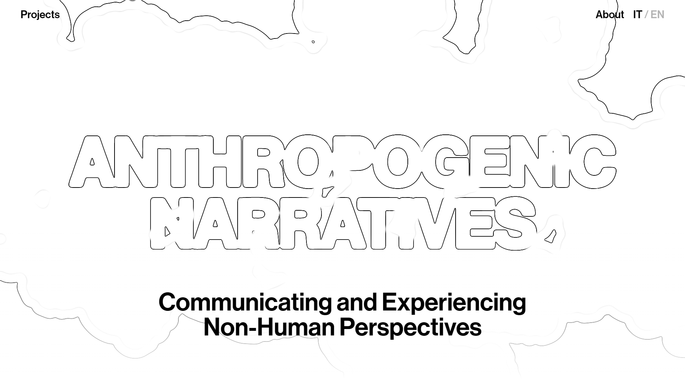
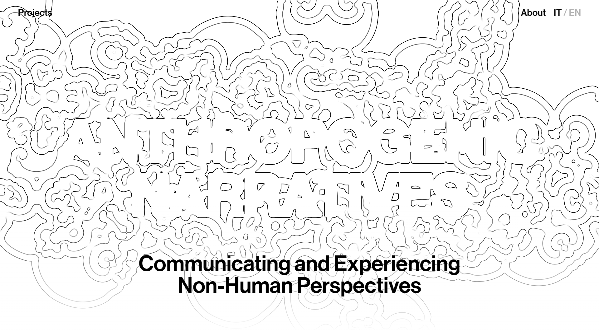
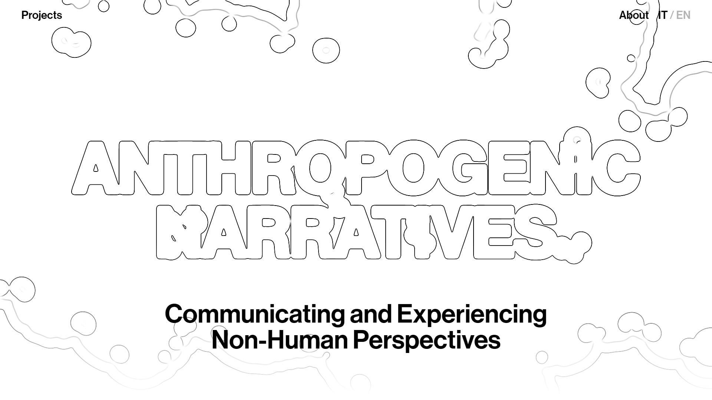
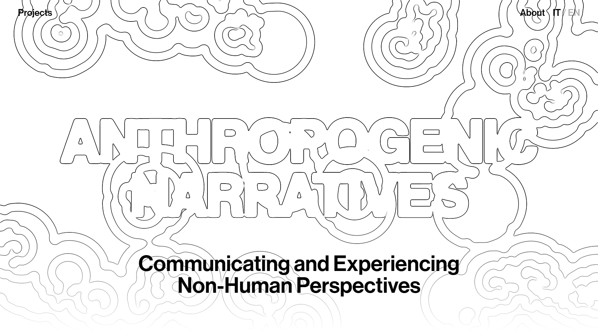

Anthropogenic Narratives
Feb 2023 - Mar 2023
Feb 2023 - Mar 2023
Website for the one-day event and exhibition, 'Anthropogenic Narratives', which was held in March 2023 at Triennale Milano. The exhibition showcased projects designed during the Final Synthesis Studio Section 1 course (Bachelor's in Communication Design, Politecnico di Milano), led by Prof. Francesco E. Guida.
Anthropogenic Narratives was an exhibition held at Triennale Milano, where non-human perspectives of eleven different natural elements were shown. Possible stories that aim to provoke and trigger reflections on the relationship between human beings and nature. The exhibition included eleven projects, design speculations that are not meant to give answers and certainties: their aim is to imagine new questions and reflect on contemporary and future times.
Other than getting the chance to show my thesis project Flogisto I worked on the organisation of the exhibition and, in particular, I was part of the Web design team.
Other than getting the chance to show my thesis project Flogisto I worked on the organisation of the exhibition and, in particular, I was part of the Web design team.
Website technical specs
The key visual chosen is called reaction-diffusion system, which is a mathematical model that shows the change in space and time of the concentration of chemical substances. In particular, it is often used to describe the emergence of periodic patterns on the surface of animal coat.
On the website, we recreated it with a p5.js sketch to which we applied a shader to make the outline effect (rather than a classic fill-in), accordingly to what we decided with the brand identity team. The whole website was designed and programmed from scratch with HTML, CSS and p5.js.






my responsibilities
web design team members
link
tags